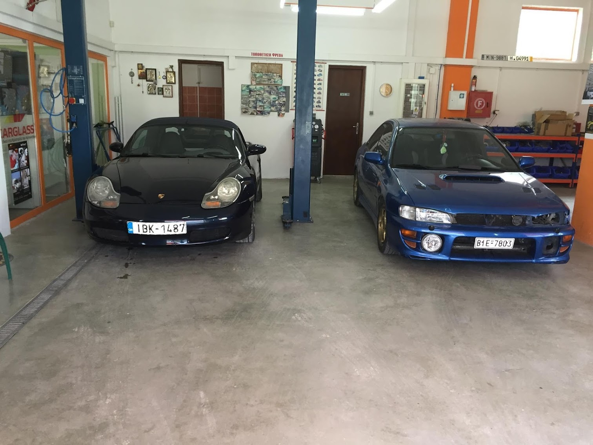

Πλήρεις υπηρεσίες κλιματισμού αυτοκινήτου στον Αγ. Κωνσταντίνο — ανατίμηση φρέον R134a & R1234yf, διαγνωστικός έλεγχος, εντοπισμός διαρροών, καθαρισμός κυκλώματος και αντικατάσταση εξαρτημάτων. Σύγχρονος εξοπλισμός για κάθε όχημα — από παλαιότερα μοντέλα έως τα νεότερα με ψυκτικό R1234yf. Full auto AC services in Ag. Konstantinos — R134a & R1234yf freon recharge, diagnostic scan, leak detection, system flush, and parts replacement. Modern equipment for every vehicle — from older models to newer ones with R1234yf refrigerant.
Αναπλήρωση ψυκτικού R134a ή R1234yf με ηλεκτρονικό μηχάνημα ανάκτησης & πλήρωσης για βέλτιστη απόδοση.Refrigerant top-up — R134a or R1234yf — using electronic recovery & recharge equipment for optimal performance.
Ηλεκτρονικός έλεγχος για εντοπισμό διαρροών, βλαβών στον κομπρέσορα, βαλβίδες, αισθητήρες πίεσης.Electronic scan to detect leaks, compressor faults, valve issues, pressure sensor failures.
Πλήρης καθαρισμός κυκλώματος από ακαθαρσίες, υγρασία, και υπολείμματα παλιού λαδιού κομπρέσορα.Full circuit flush — clearing contaminants, moisture, and old compressor oil residue.
Κομπρέσορας, βαλβίδες, εξατμιστής, συμπυκνωτής, ξηραντήρας, αισθητήρες — οποιοδήποτε εξάρτημα.Compressor, valves, evaporator, condenser, dryer, sensors — any component.
Αν αντιμετωπίζετε κάποιο από τα παρακάτω συμπτώματα, ήρθε η ώρα για έλεγχο. Όσο πιο νωρίς εντοπιστεί ένα πρόβλημα, τόσο πιο οικονομική η επισκευή. If you're experiencing any of these symptoms, it's time for a check. The earlier a problem is caught, the cheaper the fix.
